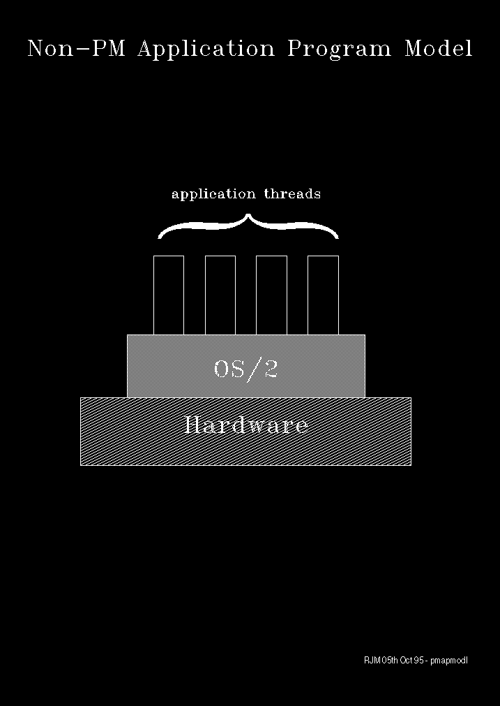
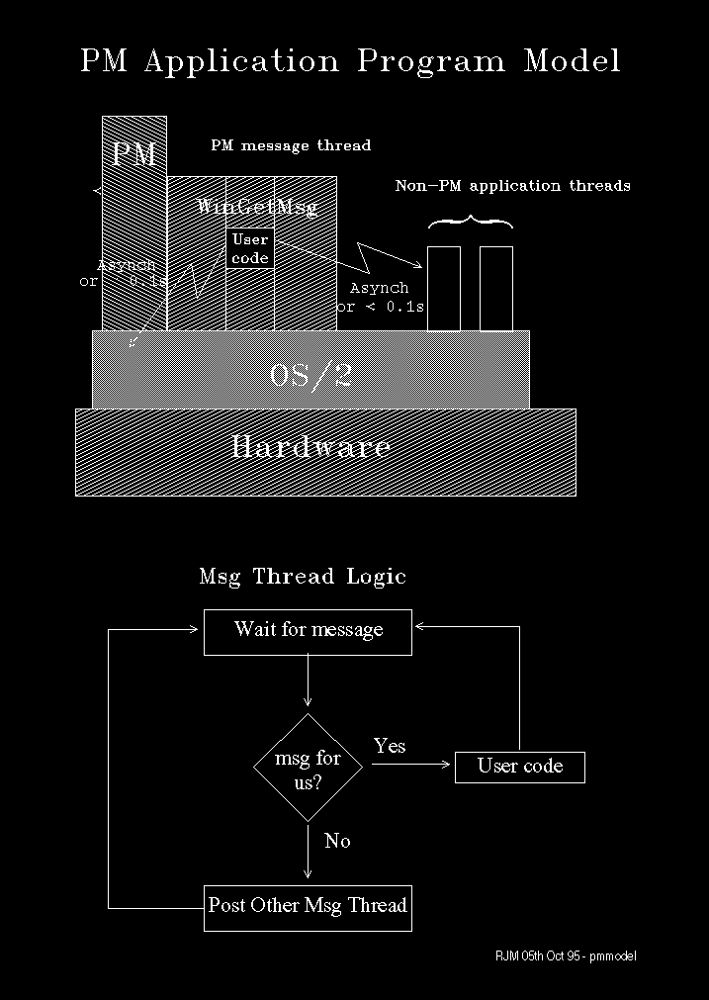

The PM Messaging Environment
First consider the non-PM application programming model as shown in the
following diagram:
This diagram illustrates the following points:
- Non-PM application threads run in a relatively unconstrained
environment (compare this with the following situation).
- The Operating System provides a black-box set
of services and interfaces.
- The Hardware is not directly accessible by the application.
For PM message threads, the environment is radically different. The key
difference is that application code that runs on a PM message thread is
effectively a subroutine of the WinGetMsg API even though WinGetMsg
is called by the application. The terminology often used to describe
this reversal is Program Inversion. WinGetMsg is said
to be inverted with respect to the application's message thread.
We see this illustrated in the following diagram.
Also illustrated by this diagram are the following points:
- PM Message threads act in a co-operative way. They
wait for messages, and pass them on to the appropriate application
if not for themselves.
- PM Message threads should spend most of their elapsed
time waiting for notification of messages - because of their co-operative
nature.
- Application code that runs on the message thread should
be limited to very short duration processing. We often speak of the tenth-of-a-second
rule, which is intended to imply the transient nature of application
code processing rather than a precise measure.
- If a message thread communicates with another thread
or the operating system, then this should be done either asynchronously
or so as not to violate the tenth-of-a-second rule.
[Back: Exploring 32-bit Presentation Manager Under WARP]
[Next: PM Message Queues]